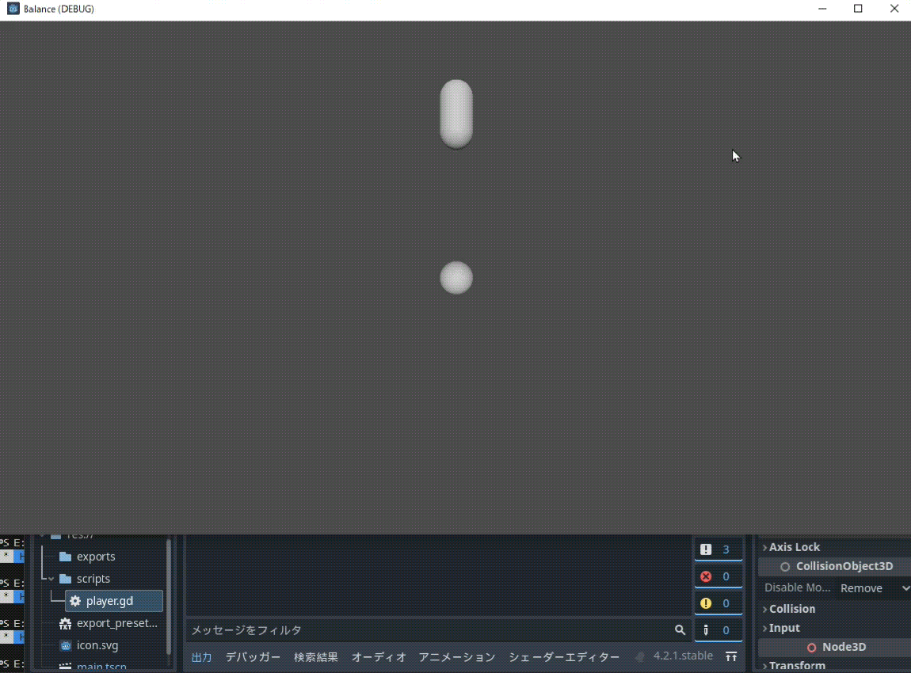
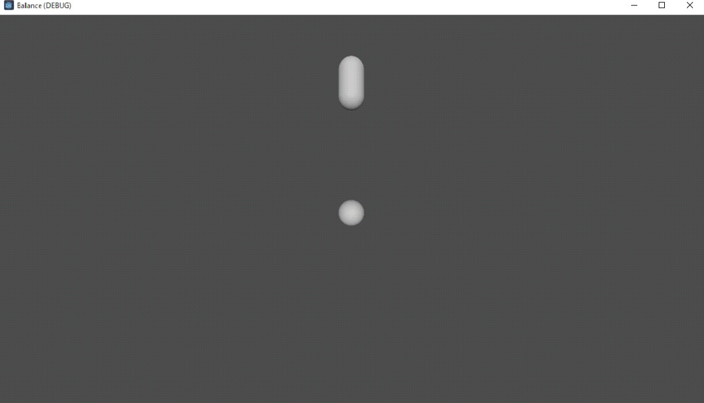
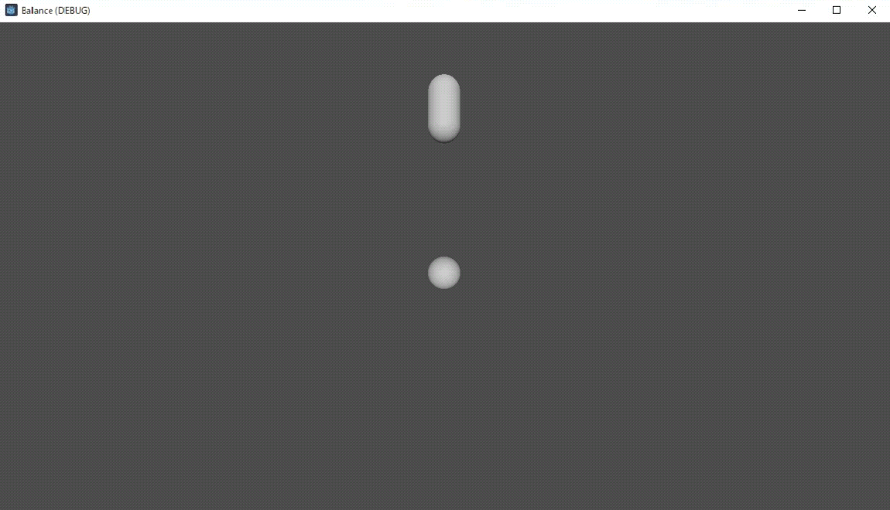
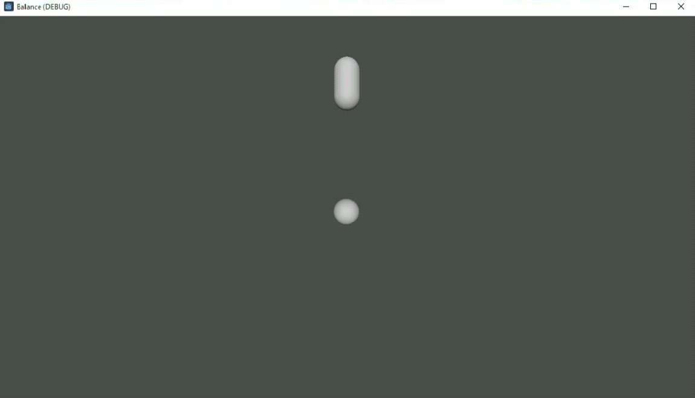
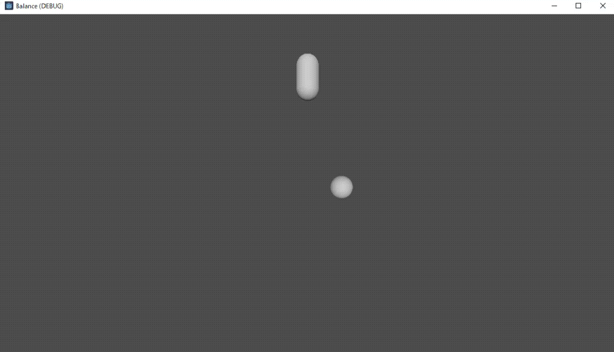
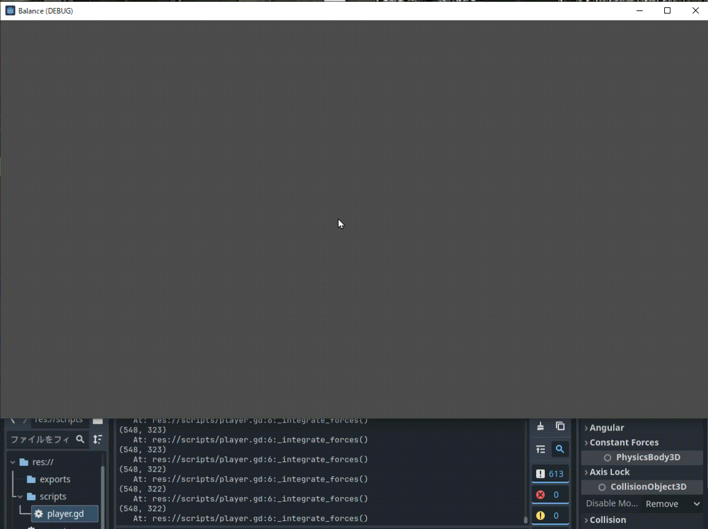
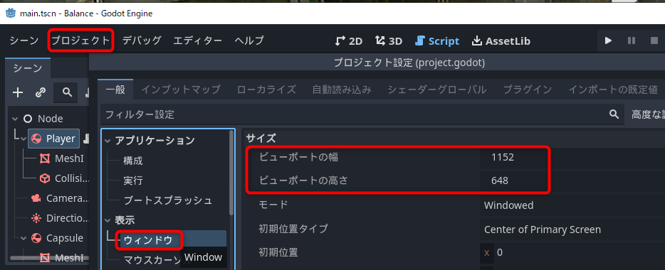
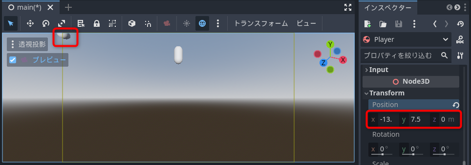
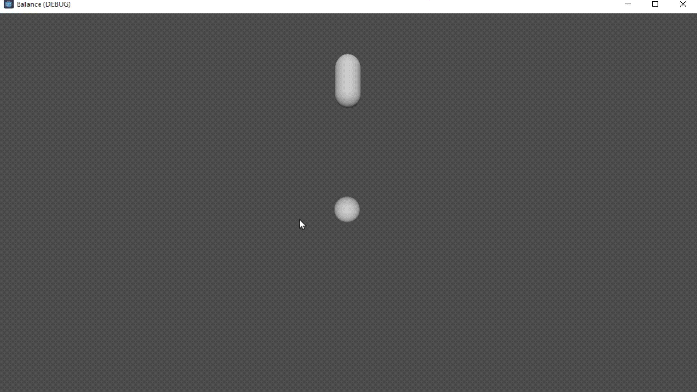

目次
動作確認：バランスゲームを作ろうで作成したスクリプトを解説します。文法に踏み込むと前置きが長くなるので、働きが分かるスクリプトを実行して、実行結果から意味を発見する流れで解説します。
完成スクリプト
完成させたスクリプトは以下の通りでした。
extends RigidBody3D
@onready var viewport := get_viewport()
@onready var camera := get_viewport().get_camera_3d()
func _integrate_forces(state):
# マウス座標の取得
var mouse_position = viewport.get_mouse_position()
# カメラからの距離
var z = camera.global_position.z - global_position.z
# カメラからの距離に対するマウスのワールド座標
var world_position = camera.project_position(mouse_position, z)
# 現在位置からの位置ベクトルを求める
var to = world_position - global_position
# 速度に変換して設定
state.linear_velocity = to / state.step
やっている内容は#の後ろに書いています。ざっくりとまとめるとマウスの座標を3D座標に変換して、そこにプレイヤーが移動するように速度を設定しています。
一つ一つ分解して動作を確認しましょう。
_integrate_forcesとはなんぞ？
6行目のfunc _integrate_forces(state):からはじめます。player.gdスクリプトを以下だけの内容に書き換えてください。
extends RigidBody3D
func _integrate_forces(state):
print_debug(state.step)
保存して実行すると以下のような結果になります。

エディターの下の方にある出力欄を見てください。0.016666…という数字がずらっと表示されます。また右側の白い!の情報欄が1秒間に60ずつ増えていくはずです。
このような動作を観察することでスクリプトの意味を推測することができます。print_debug()は、出力欄に何か表示する命令です。カッコ内のものが表示されるので、state.stepに0.016666...という値が入っていることが分かります。
1秒間に60回、そして0.016666…という数字はゲームではよく登場します。60fps、つまり1秒間に60回画面が描画されているときの値です。0.016666…は1/60の答えで1フレームあたりの秒数です。
以上からfunc _integrate_forces(state):の下にスクリプトを書くと、1秒間で60回Godotから呼び出されることが分かります。ここにマウス座標を読み取って、プレイヤーを移動させるスクリプトを書けばよさそうです。また、経過秒数がstate.stepで参照できることも分かりました。
より詳しい情報が知りたければgodot integrate_forcesのようなワードでGoogleで検索するとよいでしょう。
プレイヤーを移動させる
プログラミングは出力から考えるのがおススメです。今回の出力はプレイヤーの移動ですので、プレイヤーの移動方法を確認しましょう。
元のスクリプトで移動に関連しそうな単語を探すと、最後の行のstate.linear_velocity()が目に付きます。velocityは速度という意味ですので、これでプレイヤーに速度を与えて動かしていることが予想できます。
スクリプトを以下のように書き換えて試してみましょう。
extends RigidBody3D
func _integrate_forces(state):
state.linear_velocity = Vector3(0, 1, 0)
保存して実行してください。プレイヤーが上にゆっくり上昇します。

確認できたらVector3(0, -1, 0)に変更してください。このとき、停止しなくても保存するだけで動作が変わります。これはGDScriptのホットリロードという機能で、調整するときに役立ちます。
Vector3(-1, 0, 0)やVector3(10, 0, 0)など様々な値を試してみてください。そして3つの値の意味を推測してください。
Vector3(0, -1, 0)

Vector3(-1, 0, 0)

Vector3(10, 0, 0)

以上から、state.linear_velocityに3次元ベクトルで速度を代入すればプレイヤーを動かせることが分かりました。またどのぐらいの値でどのぐらいの速さになるかが確認できました。
マウス座標を取得する
出力の次に取り組むのが入力です。今回欲しいのはマウスの座標です。マウスの座標の取得方法と、取得できる値を確認しましょう。
スクリプトを以下のように書き換えてください。
extends RigidBody3D
@onready var viewport := get_viewport()
func _integrate_forces(state):
var mouse_position = viewport.get_mouse_position()
print_debug(mouse_position)
保存して実行すると出力欄に数字が表示されます。実行しているウィンドウ上でマウスを動かして座標の増減を観察してください。0,0になるのがどこかを確認しましょう。

出力を観察すると、左上が原点(0, 0)で、右下が(1151, 647)になります。右下の数字は何かというとGodotのデフォルトのウィンドウサイズです。プロジェクトメニューからプロジェクト設定を開いて、表示 > ウィンドウのビューポートの幅と高さで確認できます。

スクリプトが変わりましたが、分かりそうな場所を探してみてください。func _integrate_forces(state):と、print_debug(mouse_position)はすでに出てきたので意味を予想できます。1秒間に60回、mouse_positionが表示されているはずです。マウスカーソルが指しているウィンドウ上の座標が表示されているので、mouse_positionには名前の通りマウスの座標が入っていることが分かります。
var mouse_position = viewport.get_mouse_position()を観察してみます。マウスの座標が入っているであろうmouse_positionが左辺にあります。右辺のviewportは分かりませんが、その後ろにget_mouse_position()と書かれています。「マウスの座標を取ってこい」という命令ですから、これでマウスの座標が得られると推測できます。
意味が不明だったviewportをスクリプト内で探すと、読み飛ばしていた3行目で見つかります。
@onready var viewport := get_viewport()
知らない単語が並んでいますが、左辺にviewport、右辺にget_viewport()というのが確認できます。get_viewport()は「ビューポートを取ってこい」という命令なので、マウス座標と同様にこれでビューポートというのを取得して、それをviewportに代入しているのだろうと推測できます。
ビューポートの正体を知る必要は現時点ではありません。マウスの座標を得るのに必要とだけ分かっていれば十分です。
速度を求める
入力であるマウス座標と、出力であるプレイヤーの移動方法が分かりました。あとは入出力を繋ぐ処理を作れば完成です。
ここで問題が発生します。マウス座標は左上が(0, 0)で右下が(1151, 647)のスクリーン座標です。スクリーン上のピクセルで位置を表すので奥行きはありません。それに対してプレイヤーは初期位置が(0, 0, 0)という三次元座標です。参考までに画面の左上の座標を調べると(-13.5, 7.5, 0)ぐらいでした。画面の左上はマウス座標では(0, 0)です。2つの異なる座標系が存在しているのです。ゲーム開発、特に3Dのものはこのような異なる座標系が沢山登場します。

3Dは一般的には遠くに離れたものは小さく、近くのものは大きく見えます。マウスがスクリーン上で指している場所も奥行きによって座標が変化します。マウスの座標をプレイヤーがいる3Dの座標に変換する必要があります。
奥行きと座標の関係はカメラの視野角によって決まるのでカメラの情報が必要です。自前で3D変換をしていたら行列を使って計算しますが、ゲームエンジンなら座標を相互変換する機能をカメラが提供しているのが一般的です。マニュアルでカメラの機能を調べれば見つかります。
Godot公式リファレンス. projection_position
スクリーン座標とカメラからの距離を渡せば、欲しい3D座標が得られます。それぞれ以下のように求めることができます。
- スクリーン座標
- マウス座標を渡す
- Zの距離
- カメラのZ座標からプレイヤーのZ座標を引いた値
- カメラの向きが変わる場合は内積計算が必要です
これらを把握した上で、改めて完成スクリプトを観察してください。
extends RigidBody3D
@onready var viewport := get_viewport()
@onready var camera := get_viewport().get_camera_3d()
func _integrate_forces(state):
# マウス座標の取得
var mouse_position = viewport.get_mouse_position()
# カメラからの距離
var z = camera.global_position.z - global_position.z
# カメラからの距離に対するマウスのワールド座標
var world_position = camera.project_position(mouse_position, z)
# 現在位置からの位置ベクトルを求める
var to = world_position - global_position
# 速度に変換して設定
state.linear_velocity = to / state.step
- 「マウス座標の取得」は先に出てきたそのままです
- 「カメラからの距離」の
global_positionは、ワールド空間の座標を示します。カメラのZ座標からプレイヤーのZ座標を引いた値をzに求めています - 変数world_positionに、カメラの
project_position()関数の結果を代入しています。project_position()には1と2で求めたマウスの座標とカメラからの距離を渡しています。project_positionを利用するためにcameraの定義が必要です。4行目で取得しています - toに、マウスが指しているワールド座標からプレイヤーの現在座標を引いた値を求めています。これで現在のプレイヤーからマウスが指している座標へのベクトルが求まります
- 最後に、toを経過秒数で割った値を速度として
state.linear_velocityに代入しています
以上が作成したスクリプトの意味です。
最後にtoを経過秒数であるstate.stepで割っているのは何故でしょうか？試しに / state.stepを削除して試してみます。

マウスカーソルを追うのがゆっくりになりました。linear_velocityは1秒あたりの移動距離です。toに現在の座標からマウス座標を引いた値をそのまま代入すると、その場所に１秒後に着く速さで動くことになります。だからゆっくりになるのです。
1回の処理にかかる秒数はstate.stepに入っている0.01666...秒です。toをこの秒数で割れば、次の処理までにマウス座標に到着する速度が得られます。
まとめ
GDScriptの文法には触れていませんが雰囲気は伝わったでしょうか。観察して、予想して、試して、発見するというのは何かを理解する時の王道です。
Unityを知っていれば、似たような命令があることに気づきます。特に3Dは物理法則や数式によって制御するのでどのゲームエンジンでも手法は似てきます。どれか一つのゲームエンジンを理解すれば、他のものを身に着ける時間は大幅に短縮できます。
一方で、開発思想が違うので全く同じように使おうとするのはよくありません。UnityにはUnityの、Unreal EngineにはUnreal Engineの、GodotにはGodotの開発方針があります。思い込みを優先せず、マニュアルを読み、ベストプラクティスを参照して、ゲームエンジンに合った手法を素直に受け入れることも大切です。
よく読み、よく観察し、よく考え、よく手を動かしていきましょう。